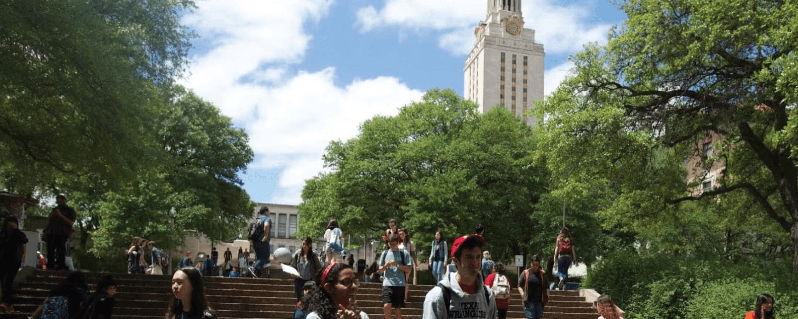

The University of Texas at Austin, founded in 1883, ranks among the best universities in the world. With 70 programs ranked in the top 10, UT is the #1 public university in Texas and the #8 public university in the nation.
Like the state it calls home, The University of Texas at Austin is a bold, ambitious leader supporting some 55,000 students, 4,600 faculty, 15,000 staff and top national programs across 16 colleges and schools. As Texas’ leading research university, UT attracts more than $1.37 billion annually for discovery. Amid the backdrop of Austin, Texas, a city recognized for its creative and entrepreneurial spirit, the University provides a place to explore countless opportunities for tomorrow’s artists, scientists, athletes, doctors, entrepreneurs and engineers.
Get the facts about our student body, rankings, academics, research, athletics and campus.
U.S. News & World Report, 2027
Why burnt orange and white? Why a longhorn steer? And where did the name “Bevo” really come from? Texas is rich in traditions that tell the story of our past, even as our eyes are always on the future.
Meet the executive team that is leading our University to new heights and lifting Texas by giving bright students from every part of society a top academic experience.
The Tower exemplifies the bold spirit unique to The University of Texas at Austin. It has been the center of UT’s campus and an enduring symbol of the University since it opened almost a century ago.
Spend just a minute on our campus and you’ll quickly see how The University of Texas at Austin is an immense and beautiful world all its own. And with our dozens of museums, libraries, centers, institutes and special venues spread across the campus and the city, each with its own unique exhibits and programming, you’ll never be bored.
Imagine a city bursting with an entrepreneurial spirit, a commitment to personal freedom and a passion for unearthing new discoveries. Add a vibrant, internationally renowned music, film and art scene, along with a thriving economy that leads the way in the technology, engineering and health care industries. This is the city we’re proud to call home.
Texas Global advances UT’s academic mission by leading, supporting and coordinating the University’s international engagement efforts, fostering strategic partnerships on campus and abroad, supporting a community of impressive international students and scholars, and creating opportunities for students, faculty and alumni to engage with peers and institutions around the world.
The UT Dell Medical Center is the emerging academic medical center anchored by Dell Medical School — an unprecedented opportunity that brings together state-of-the-art clinical care, cutting-edge research and next-generation medical education in the heart of Texas. Here, we turn bold ideas into breakthroughs, all with one person in mind: the patient.
We’re stronger when we work together. That’s why Texas values partnerships in education, research and community service — with businesses, our military and veteran connections, community groups and other non-profits — to make an even bigger impact on our city, state and world.

The mission of The University of Texas at Austin is to achieve excellence in the interrelated areas of undergraduate education, graduate education, research and public service.
Honesty, integrity and respect: three words that embody the Longhorn spirit and help make UT one of the best universities in the world.